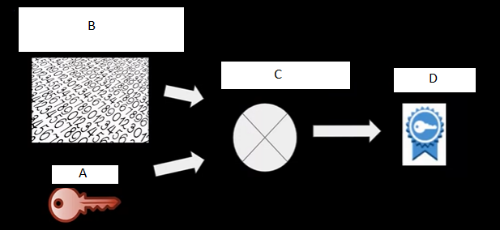
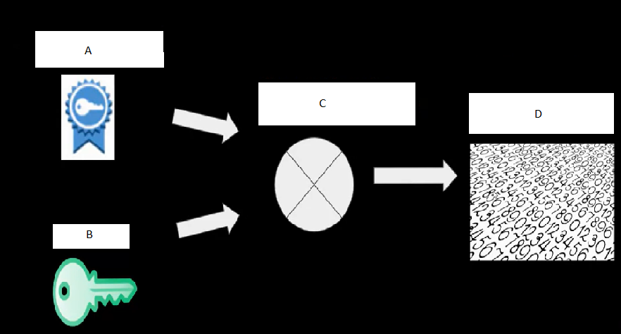
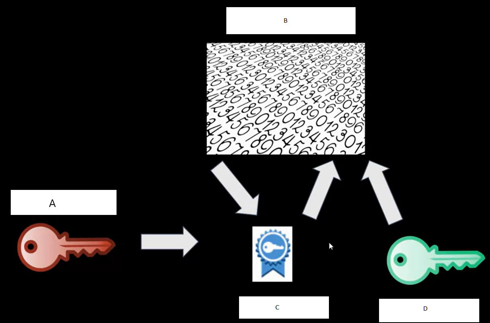

When considering security of OTA update schemes, you can use obfuscation to remove the need for cryptography.
Which design goals are important to consider when desiging a device update scheme?
Which update scheme occupies maximum storage space?
Label the components in the drawing below, depecting a signature generation step.

Label the components in the drawing below, depicting a signature validation process.

Select the relationshipos between components below

If a hacker obtains one or more of the inputs or outputs used with signature validation step, it's possible to use these to recreate the private key
If a hacker obtains a private key, it's possible to generate a signature which passes signature validation with the corresponding public key
Given an asymmetric encryption step which requires a fixed input size, how can you sign a firmware image with different size?
Why is it important that a hash function used during a signature generation step produces different output with slight changes in input binary file?
With a properly generated pubilc and private key combination even a supercomputer would take more than a year to correctly guess and calcuate a private key.
Asymmetric Encryption schemes available today are resistent to quantum computing, however this may not always be the case.
What is a reason to use A/B Dual Redundant updates instead of Single Copy or Application Update schemes?